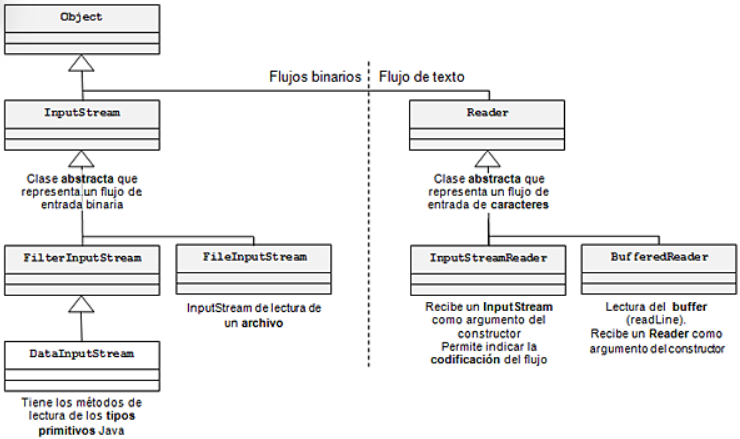
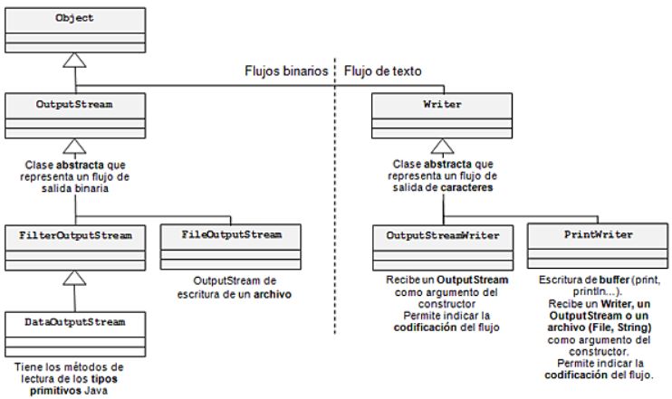

Ficheros de Texto
y Excepciones
Tratamiento de errores en tiempo de ejecución con try-catch-finally,
lanzamiento de excepciones con throw / throws,
y acceso a ficheros de texto con flujos de caracteres de la API java.io.
También se incluye la localización de ficheros y la visión global de la jerarquía de entrada/salida.
Excepciones
Mecanismo para controlar errores en tiempo de ejecución: fallos físicos, datos incorrectos, violaciones de seguridad u operaciones no permitidas.
try-catch-finally
Estructura para capturar y tratar excepciones sin interrumpir por completo el flujo normal del programa.
Ficheros de texto
Lectura y escritura de ficheros .txt, muy usados para configuraciones, migraciones e intercambio de información.
Conexión entre bloques
Cuando trabajamos con ficheros es imprescindible tratar excepciones de entrada/salida, así que ambos apartados se practican juntos.
Las excepciones son objetos Java que representan situaciones anómalas en tiempo de ejecución. Todas heredan directa o indirectamente de Throwable. Se apoyan en la herencia para representar errores más generales y más específicos.
Checked exceptions
Son las excepciones que el compilador conoce porque los métodos declaran que pueden lanzarlas.
Estamos obligados a tratarlas o propagarlas con throws.
Ejemplos: IOException, FileNotFoundException.
Unchecked exceptions
No obligan al compilador. Heredan de RuntimeException y suelen representar errores de programación.
El bloque try contiene las sentencias que potencialmente pueden lanzar una excepción.
Si se produce una, se interrumpe la ejecución del bloque y se salta al catch correspondiente.
El bloque finally es opcional y se usa para salida segura, liberación de recursos y cierre.
try { // Código que puede lanzar excepciones acciones; } catch (FileNotFoundException e) { System.out.println("Fichero no encontrado: " + e.getMessage()); } catch (IOException e) { System.out.println("Error de E/S: " + e.getMessage()); } finally { // Se ejecuta siempre // Ideal para liberar recursos o cerrar ficheros }
catch deben ordenarse del más específico al más genérico.
FileNotFoundException
debe ir antes que
IOException.
Otra posibilidad es propagar la excepción en vez de tratarla en ese punto:
public void leerFichero(String ruta) throws IOException { BufferedReader br = new BufferedReader(new FileReader(ruta)); // Si hay problema, la excepción se propaga al método llamante }
Si dentro de un método detectamos una situación anómala que no podemos resolver, podemos lanzar una excepción para interrumpir la ejecución del método y delegar el tratamiento en el llamante.
public void setEdad(int edad) { if (edad < 0) { throw new IllegalArgumentException("Edad negativa"); } this.edad = edad; }
public class TareaNoEncontradaException extends Exception { public TareaNoEncontradaException() { super("Tarea no encontrada"); } public TareaNoEncontradaException(String mensaje) { super(mensaje); } }
Carácteres codificados
Los ficheros de texto se componen de caracteres codificados y son muy útiles para compatibilidad entre sistemas y aplicaciones.
Acceso secuencial
La lectura se hace desde el principio del fichero y la escritura desde el principio o desde el final si se abre en modo añadir.
Líneas de texto
Las líneas suelen separarse con \n y en Windows también aparece \r\n. newLine() usa el separador adecuado.
Tamaño variable
Como las líneas tienen longitud variable, el acceso debe hacerse secuencialmente para encontrar sus separadores.
Constructores habituales
FileReader(String ruta) y FileReader(File fichero)
FileWriter(String ruta) y FileWriter(File fichero)
FileWriter(String ruta, boolean append) o FileWriter(File fichero, boolean append)
Modos de acceso
Sobreescribir: new FileWriter("f.txt") o segundo parámetro false.
Añadir: new FileWriter("f.txt", true).
FileReader o un FileWriter el fichero se abre ya en ese momento.
A partir de ahí, ya podemos leer o escribir.
Lectura con FileReader
read() devuelve un int con el código Unicode del carácter leído.
Si se alcanza el final del fichero, devuelve -1.
Por eso, para trabajar con el carácter, suele hacerse cast con (char).
ready() permite comprobar si aún quedan datos por leer.
Escritura con FileWriter
write(int) escribe un carácter.
Se usa int por compatibilidad con read(), pero aquí no hace falta cast: la conversión es automática.
Después de procesar un fichero hay que cerrarlo siempre con close().
BufferedReader y BufferedWriter
Para crear un BufferedReader se utiliza un constructor que recibe un objeto de tipo Reader, normalmente un FileReader.
Para crear un BufferedWriter se utiliza un constructor que recibe un objeto de tipo Writer, normalmente un FileWriter.
readLine() devuelve un String sin el separador de línea y, al final del fichero, devuelve null.
write(String) escribe una cadena, y newLine() añade el separador correcto según el sistema operativo.
try (FileReader fr = new FileReader("notas.txt")) { int codigo; while ((codigo = fr.read()) != -1) { char c = (char) codigo; System.out.print(c); } } catch (IOException e) { System.out.println(e.getMessage()); }
try (BufferedReader br = new BufferedReader( new FileReader("tareas.txt"))) { String linea; while ((linea = br.readLine()) != null) { System.out.println(linea); } } catch (IOException e) { System.out.println(e.getMessage()); }
try (BufferedWriter bw = new BufferedWriter( new FileWriter("tareas.txt", true))) { bw.write("1;Actividad CRUD;Programación;PENDIENTE"); bw.newLine(); } catch (IOException e) { System.out.println(e.getMessage()); }
finally manual.
Ruta absoluta
Indica exactamente dónde está el fichero, pero depende del sistema operativo y de la instalación concreta.
Ruta relativa
Depende del directorio de trabajo actual, por eso puede variar según dónde se ejecute el programa.
Desde terminal
El directorio de trabajo es el que esté activo en la consola de comandos.
Desde NetBeans o IDE
El directorio de trabajo suele ser el directorio del proyecto.
Lectura
| Clase | Uso |
|---|---|
| FileReader | caracter Lectura carácter a carácter. |
| BufferedReader | línea Lectura por líneas con readLine(). |
Escritura
| Clase | Uso |
|---|---|
| FileWriter | caracter Escritura carácter a carácter. |
| BufferedWriter | línea Escritura por líneas con write() y newLine(). |
Métodos y comportamiento clave
| Método | Clase | Descripción |
|---|---|---|
read() |
FileReader | Lee el siguiente carácter como int. Devuelve -1 al final del fichero. |
ready() |
FileReader / BufferedReader | Permite comprobar si aún quedan datos por leer. |
readLine() |
BufferedReader | Lee una línea completa y devuelve null al final. |
write(int) |
FileWriter | Escribe un carácter. No necesita cast de conversión. |
write(String) |
BufferedWriter | Escribe una cadena completa. |
newLine() |
BufferedWriter | Añade el separador de línea adecuado según el sistema operativo. |
close() |
Todos | Cierra el flujo, libera recursos y garantiza el volcado de buffers de escritura. |
FileReader puede lanzar
FileNotFoundException.
El de FileWriter puede lanzar
IOException.
La API java.io organiza las secuencias de entrada y salida en dos jerarquías paralelas.
No solo sirve para ficheros: también se usa para otras fuentes y destinos de datos, como conexiones de red.
Entrada:

Salida:

try (BufferedWriter bw = new BufferedWriter( new FileWriter("tareas.txt", true))) { bw.write("1;Actividad CRUD;Programación;PENDIENTE"); bw.newLine(); bw.write("2;Examen CSS;LMSGI;EN_PROCESO"); bw.newLine(); } catch (IOException e) { System.out.println("Error al escribir: " + e.getMessage()); }
try (BufferedReader br = new BufferedReader( new FileReader("tareas.txt"))) { String linea; while ((linea = br.readLine()) != null) { System.out.println(linea); } } catch (FileNotFoundException e) { System.out.println("No existe el fichero."); } catch (IOException e) { System.out.println("Error de lectura."); }
No cerrar el fichero
Si no se cierra, pueden quedar datos en buffer y no liberarse correctamente los recursos. Usa try-with-resources.
Sobreescribir sin querer
new FileWriter("f.txt") borra el contenido previo. Para añadir hay que usar true.
Orden incorrecto de catch
Si pones IOException antes de FileNotFoundException, el segundo no se alcanzará.
Olvidar el cast a char
read() devuelve int. Para imprimir el carácter normalmente necesitas (char).
No comprobar el final de fichero
readLine() devuelve null y read() devuelve -1 al final del fichero.
Ruta relativa mal entendida
Si el programa no encuentra el fichero, revisa cuál es realmente el directorio de trabajo.
Throwable es la raíz de errores y excepciones.Error representa fallos intratables y Exception los tratables.throws.RuntimeException y sus hijas son unchecked.catch van del más específico al más genérico.finally se usa para salida segura y liberación de recursos.FileReader.read() devuelve int y al final -1.BufferedReader.readLine() devuelve null al final.FileWriter("f.txt", true) abre en modo añadir.